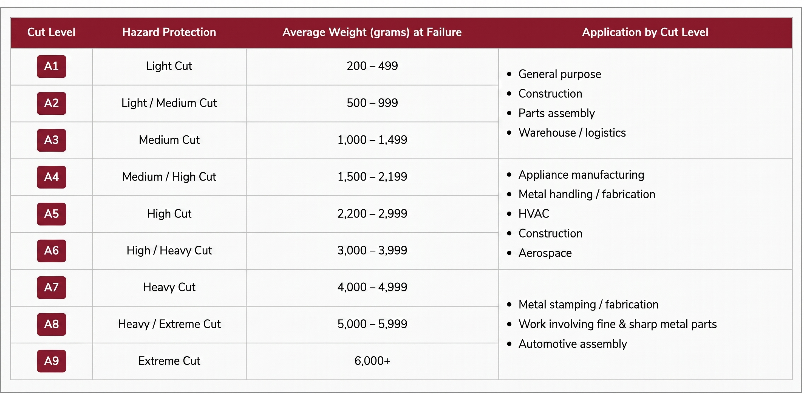
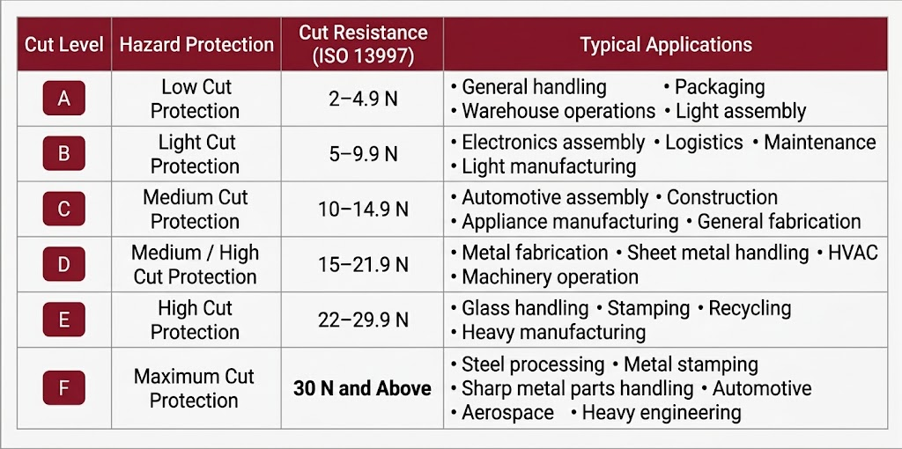
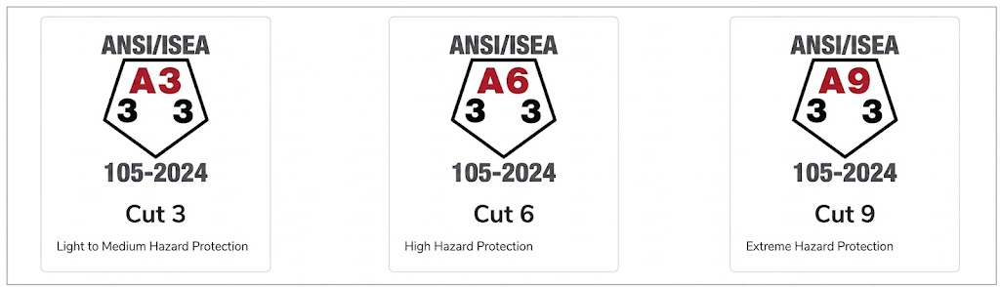
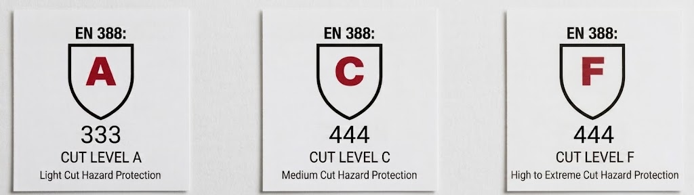

Sourcing the wrong level of hand protection is a critical compliance risk. Utilizing standardized testing metrics is the only reliable way to purchase certified cut-resistant gloves that match active jobsite hazards.
The ANSI/ISEA 105 standard is the benchmark for measuring the cut resistance of safety gloves. It classifies gloves into nine cut protection levels (A1–A9), with ANSI A9 providing the highest level of cut resistance.
Each glove is tested to determine the average force, measured in grams, required to cut through glove material. A higher ANSI rating indicates greater protection against sharp objects and cutting hazards.

EN 388 is the European standard for testing protective gloves against mechanical risks. It measures a glove's performance in five key areas: abrasion resistance, blade cut resistance, tear resistance, puncture resistance, and TDM cut resistance.
Modern EN 388 gloves use the ISO 13997 (TDM) cut test to determine cut protection. Based on the force required for a standardized blade to cut through the glove material, gloves receive a cut resistance rating from A to F, with Level F representing the highest level of cut protection.

In November 2024, the ANSI/ISEA 105 standard introduced an updated pentagon-shaped pictogram designed to improve the identification of glove performance. The pictogram clearly displays the glove's cut resistance, abrasion resistance, and puncture resistance, making it easier for users to compare products and select the appropriate protection.
The cut resistance rating (A1–A9) is now positioned at the top of the symbol for quick recognition. While the presentation has been enhanced, the testing methods and protection levels remain unchanged.

The EN 388 standard remains the leading European benchmark for mechanical protection gloves. Unlike ANSI/ISEA 105, EN 388 evaluates gloves for abrasion resistance, blade cut resistance, tear resistance, puncture resistance, and ISO 13997 (TDM) cut resistance.
Cut protection is classified from Level A to Level F, with Level F providing the highest level of cut resistance. Although the EN 388 testing methodology has remained unchanged in recent years, the standard continues to provide manufacturers, employers, and workers with a reliable method for selecting gloves based on workplace hazards.

Protecting your workforce starts with verifying certified $A1$–$A9$ (ANSI) and $A$–$F$ (EN 388) ratings stamped directly on your hand protection. Matching these precise, laboratory-tested cut standards to specific jobsite hazards eliminates guesswork, reduces costly laceration injuries, and insulates your business from compliance liabilities. Sourcing certified, high-dexterity PPE not only safeguards your crew but also minimizes operational downtime and maximizes your overall procurement ROI.
Hand injuries are among the most common workplace accidents across the manufacturing and industrial sectors. According to OSHA (Occupational Safety and Health Administration), approximately 71% of hand and arm injuries could have been prevented with proper personal protective equipment (PPE). OSHA also reports that many workers either do not wear hand protection or wear gloves that are not suitable for their tasks.
Similarly, the European Agency for Safety and Health at Work (EU-OSHA) emphasizes that selecting the correct protective gloves based on workplace hazards is essential for reducing occupational injuries and ensuring compliance with European workplace safety regulations.
Sourcing safety wear requires a factory partner that keeps pace with changing regulations. Updates to global standards like ANSI/ISEA 105 and European EN 388 protocols continuously raise the bar for physical material testing and labeling visibility. These frameworks demand permanent on-glove markings that display verified performance levels, ensuring safety managers can easily identify field-compliant gear.
Staying ahead of these standards is a commercial necessity. Sourcing outdated or unrated inventory exposes distributors to severe liability and compromises worker safety on the jobsite.
Don't rely on lookalike safety claims. Partner with Guard Gloves as your direct contract manufacturer to deploy premium, certified private-label impact lines built precisely to global legal frameworks.